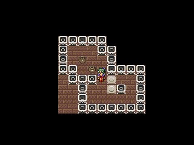
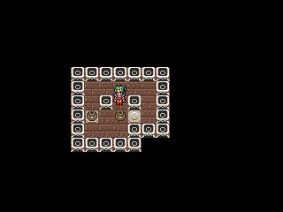
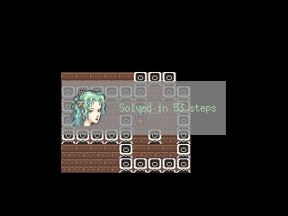

Sokoban Clone
Game description
This is a Sokoban clone. You push clay pots around toward the targets. You can only push, so beware walls and corners.
Screenshots
|  |  |  |
Download
Sokoban
Source Code (Dev-C++)
Release Date: 2005-10-29
Credits
Related links
Goals
The goal while making this game was to test the basic fonctionality of the Kyra sprite engine, how it is deployed, and how it performs.
Interesting Issues
This is my first C++ project since Magic Number 2002. I did not know how much I missed C++, until it welcomed me back with open arms.
Dependencies
To my knowledge, all you need is SDL.dll and SDL_mixer.dll to play this game. Both are bundled inside the game distribution.
Source Code license
The source I provide is as is. Do whatever you want with it, who cares. I provide it so that people may learn from it, make fun of me, or fix stuff they hate, or whatever. There aint any special license comment at the beginning of each files, because that polutes a lot. Remember that I'm the author though, so don't simply pretend the source was written by you. As for the resources, I use them without care. Do understand that they aren't mine. I make them available much like fans on websites make them available for me to download. If I would sell this game, then I'd change the resources for stuff I own. Enjoy.